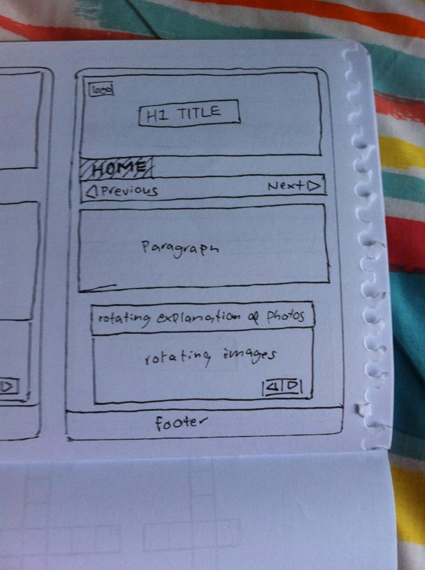
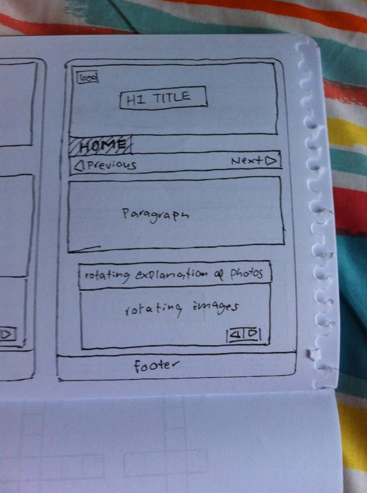

It’s my first week at EDA and so far I’m finding it pretty awesome! Initially I thought that we were mainly going to be filling our brains up with technical skills without a pile of context, like you do on Free Code Camp or Code Academy. I was a little intimidated. It’s really cool to see that the focus of EDA is building great engineers, so your empathy, interpersonal skills and design knowledge all come into it. I want to eventually build a startup (after I get a job and earn some money!) so it’s cool to see that this course is gonna give me more knowledge than straight up coding.
I like the whole ‘no grades’ element, cos I used to be a person who would do the minimum amount of work for the best grade. I wasn’t so interested in pushing myself or helping other people, and I think that will change in an environment like EDA
I also like the focus on team work. I’m a bit introverted and a bit competitive, so I thought this would be a challenge for me, but so far I’ve been loving all the check ins and accountability groups. I like looking at the waffle board with everyone’s cards in it, so even if I’m having a bad day I can see someone else move a card and be like ‘GO TEAM GO!’
I’ve done a bit of theatre work and I’m finding EDA quite similar to putting on a production. Doesn’t matter if you’re a great actor, if the other actors don’t know their lines, or the script is flabby then the show is gonna be crap. You’ve got to be kind to each other and work together to build the best possible show. This was a surprise to me, cos I thought coding would be a lot less creative and team work based.
So basically I’m really excited for the course and looking forward to building relationships and hacking on some cool shit with you all!
 
